Icon sketches · round 3
六个方向，选一个再往下做
蓝色渐变底、圆角方块、光源处理都是共用的，只有形态在变——这样你只需要判断"哪个形对"。选定后我会把那一版的字标、托盘、多尺寸降级和 .ico 一起精修到位。
推荐
16 32 64 256
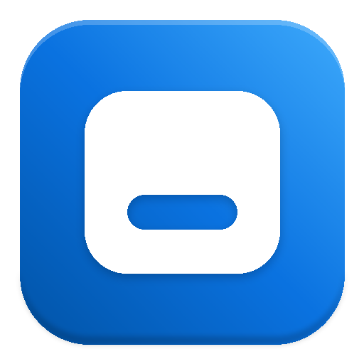
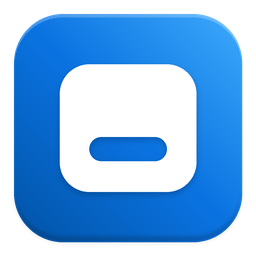
优势16px 依然是一块干净的形；缩放到任务栏尺寸不掉细节；与深色任务栏对比强。
风险单看容易被读成"卡片 / 徽章"，靠字标和语境补足。
推荐
16 32 64 256
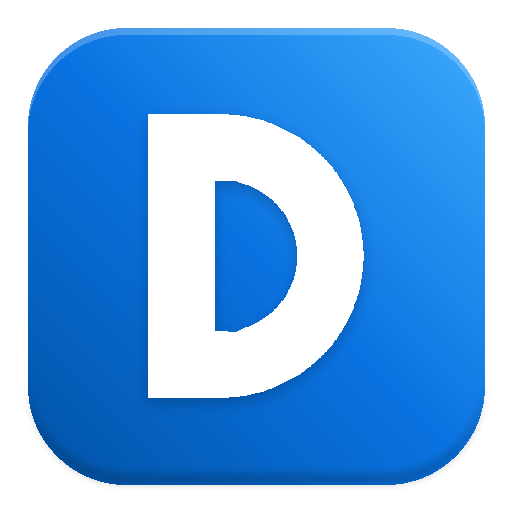
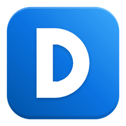
优势最不容易出错；任何尺寸都清楚；和"DCX"字标天然是一套。
风险不够独特，放在一堆工具里没有记忆点。
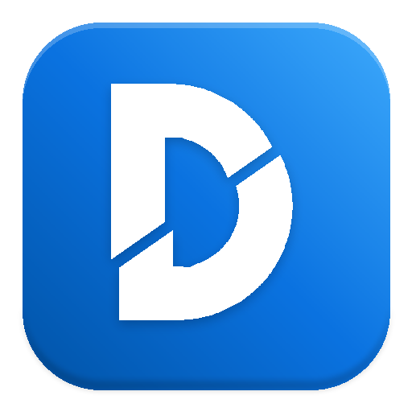
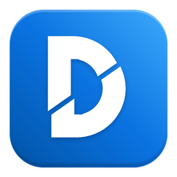
优势有细节、有故事，256 下质感好。
风险32px 以下错位会被读成"画坏了"，需要单独出简化版。

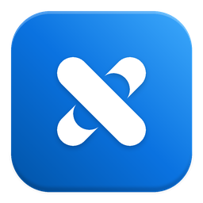
优势六个里最有识别度，不撞脸。
风险X 在 UI 里常等于"关闭"；小尺寸交织的缺口会糊掉。
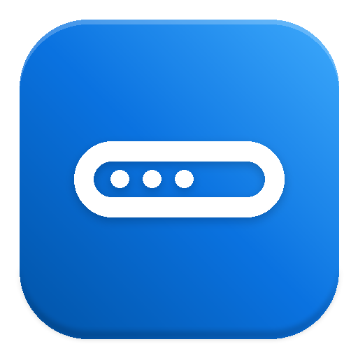
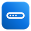
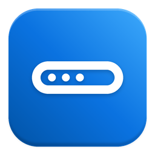
优势最直白，一看就知道改的是任务栏。
风险横向细条在方形图标里上下空，观感偏弱；小尺寸只剩一个点。
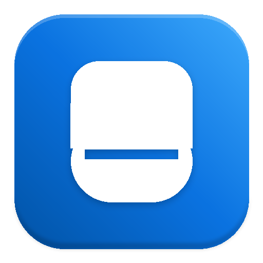
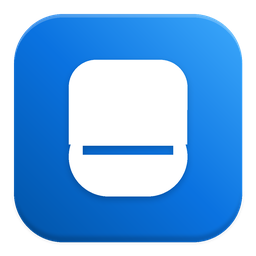
优势单形，缩到多小都是同一块；竖向比例更有图标感。
风险容易被读成"手机 / 卡片"，需要把上半的窗口特征做明显。
接下来我会做的事（按你选的那一版）
- 把形态精度拉到成品：光学对齐、笔画统一、16/20 单独出简化版。
- 配一版字标：字重、字距、与图标的间距按选中形态重算。
- 出全套
dcx.ico（16→256 九个尺寸，<128 BMP、128+ PNG）、PNG 图标集、托盘深浅两套。 - 色板再给 2–3 组可选（现用 Win11 蓝；可试深海蓝 / 青蓝 / 深灰）。